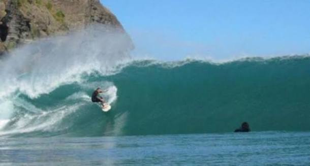
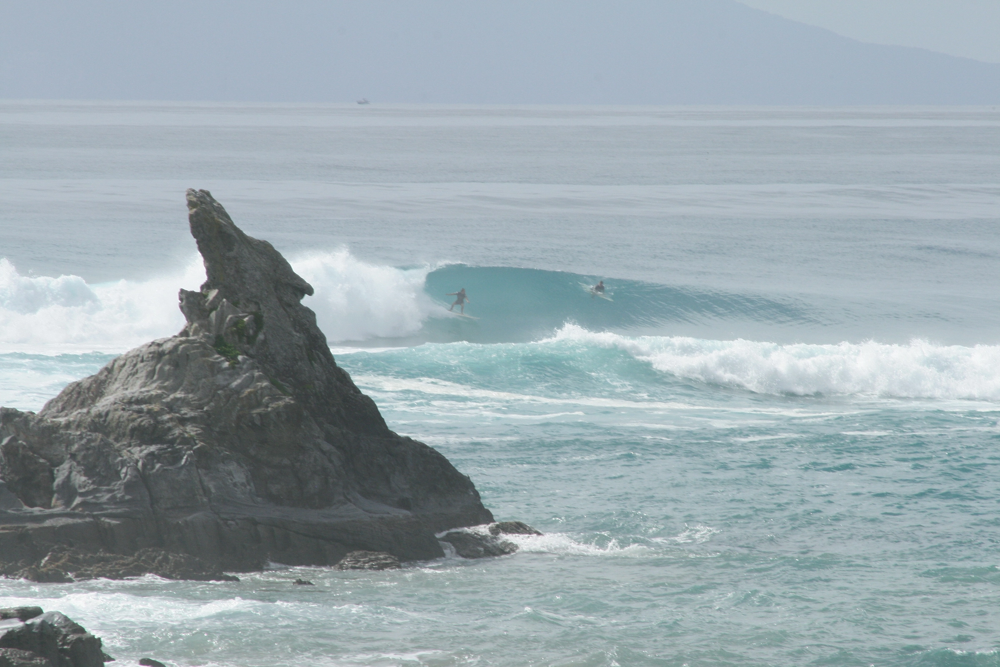
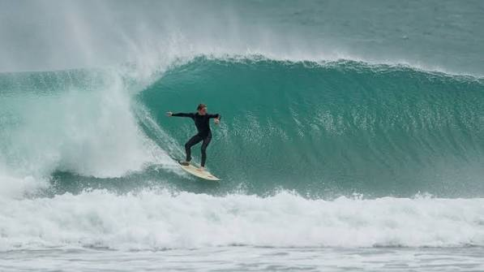

Piha Beach is New Zealand's most famous surf destination, located on Auckland's wild west coast about a 45-minute drive from the city center.

Mangawhai Heads sandbar is a famous, powerful rivermouth surf break located about 1.5 hours north of Auckland in Northland.

Maori Bay (also known as Maukatia) is a rugged, black-sand surf beach located on Auckland’s west coast just south of Muriwai
